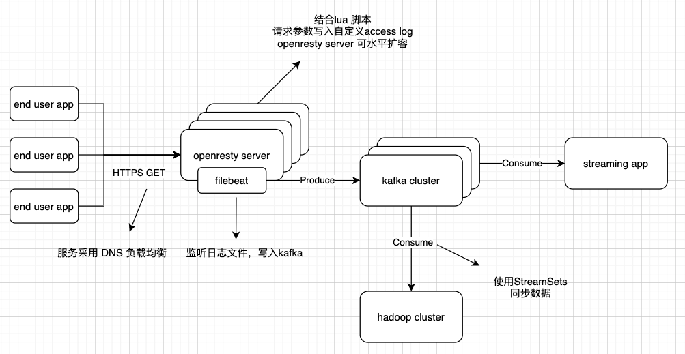
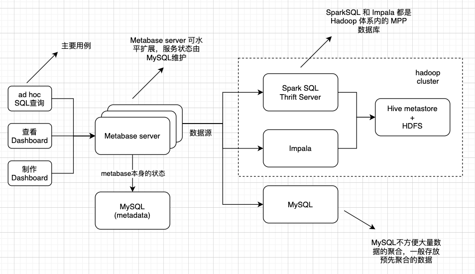

分享下 4月、5月（特别是5月，5/1假期后基本上全身心投入）在忙的这个数据项目经历，工作面覆盖陪同拜访客户、开会、需求分析、提供方案、数据清洗、数据分析、数据基础设施的搭建开发、帮甲方IT调试代码等环节，累到头秃。
（本文刻意隐去客户信息。）
需求背景
客户需求是做一个聚合小程序（此处脑补下麦当劳的微信小程序「i麦当劳」），用于广告投放，比如微信系APP的弹屏广告。应用本身不复杂，只是罗列客户其他小程序、H5应用和一些广告链接，让用户选择。
投放效果需要数据量化，我们做了前后端的数据埋点，尽可能收集用户的行为记录。
客户花钱投广告，是为了企业销售额等指标的提升。我们也对接了客户的订单数据，多方数据进行交叉分析。
数据量化的结果，也就是数据报告，以日报、周报、月报的形式体现。
技术细节
下文就以数据的生命周期来讲，数据是怎么从毛料，到精修，最后到报表的。
数据采集
工作重点：
- 定义数据对接规范，或是理解别人的规范。
- 与自家开发做好数据对接。把握数据质量。
- 与甲方开发做好数据对接。把握数据质量。（为了加快数据对接速度，又是写示例代码、又是帮他们定位中文编码问题。体验真是酸爽。还是自家小伙伴靠谱。）
- 数据质量很重要。数据质量决定了后续工作是否需要反复。
1. 前端应用埋点
用于收集聚合小程序的用户行为记录。
整体架构还是沿用几年前的，唯一变化的就是埋点的规范，因为需求的不同而变化。基本上如下逻辑：
- 前端应用开发主动在代码中加入用户行为埋点。
- 埋点 SDK 异步地将数据上传到服务器。多台服务器通过 DNS 解析来负载均衡。
- WEB 服务器使用的是 openresty，有一些 lua 脚本，用于处理 cookie，和格式化存储行为日志。
- 之后数据通过Filebeat、Kafka、StreamSets等软件分发到Hadoop集群、实时处理任务。

2. SFTP 文件同步
用于接收甲方的订单数据（二期、三期项目还有其他类型数据）。
根据双方约定时间收取文件，将文件存入Hadoop集群。
3. 微信公众号授权
客户授权后，我们获取到了公众号的粉丝关注记录（由后端开发请求微信服务器取到数据并写入Kafka集群）。同样，也存放到了Hadoop集群。
ETL 与 数据仓库
工作重点：
- 承上启下的工作。以方便数据分析为出发点，反过来检验数据质量。
- 字符串类型的时间转为时间戳类型。BI 工具需要。
- 基于数据金字塔模型、维度分析模型建模。
- 数据仓库未来可以考虑 ClickHouse。Hadoop体系数据粒度是文件，更新历史数据中的某条记录，得更新所在的整个文件！
1. ETL
经过数据采集阶段，毛料数据以文件形式存储于Hadoop集群。本阶段主要将毛料数据抽取成表（实际还是文件存储）。
技术上使用 Hive/Spark 框架写SQL。Hive SQL实在太慢了，所以一般使用Spark做清洗，Hive更多地是用其metastore组件，维护表结构信息。
因为Spark（SQL）脚本得用Python写。抽象了一个清洗脚本模板，填空：
- 可选填清洗前执行的SQL。比如建表DDL。
- 可选填毛料数据的解析schema。（直接依靠框架采样推理出schema，与实际schema比，可能缺字段，程序会崩。schema也没必要手写。一个技巧就是准备一条最全的数据记录，让Spark推理，把schema存下来使用。）
- 填核心的清洗逻辑。
2. 数据仓库
数据是有层次结构的。以用户行为记录为例：
- 采集到的是毛料数据。很多时候，为了埋点规范能够动态扩展，字段都定义在一个有嵌套JSON结构的字段里。
- 清洗成明细数据。一般是一张扁平表，能够描述用户在某上下文（时间、手机型号、IP地址）中点了某按钮。
- 基于明细数据生成汇总数据。明细数据中维度很多，是以用户维度、用户会话维度汇总？还是以按钮、手机型号汇总？
- 汇总是有不同程度的，比如按程度从低到高，按日、按月、按年。
如果把占数据量绝大部分的毛料数据放在底部，占少部分的汇总数据放在上方，数据的层次结构可以想象成金字塔。所以也有数据金字塔模型一说。
数据仓库的材料网上很多，比如维度分析模型，就不展开了。
OLAP 数据库 与 BI 工具
工作重点：
- 保证 OLAP 数据库高效稳定。
- 选择合适的BI工具。（写重复代码是一件非常无聊的事情）

1. SQL on Hadoop
因为数据仓库是基于Hadoop/Hive的。在这个体系下的，分析型数据库选择就不多了。
- 使用的CDH版本Hadoop，自带Impala。
- Hive。这个太慢了，无法适用BI场景。
- SparkSQL。需要独立安装。
最合适的就是Impala，查询速度快，天然由CDH Manager工具管理监控。而且每个impalad都是天然的proxy，任务会分发给其他节点，并行完成。
一开始还没有为 Metabase 开发 Impala 的数据库驱动。有单独部署一个 SparkSQL Thrift Server。随着数据量上升，太容易因为 OOM 崩了。
2. Metabase
去年 10月工作内容调整，重新着手数据相关的工作。当时，时不时有一个H5营销应用的网页分析报表下载需求。为了减少人工操作，开始调研开源的 BI 工具。
- superset 名气挺大的，但是各种不方便。没法做 JOIN！写SQL没法直接做可视化！界面老土（用flask-appbuilder生成的UI模板）！
- Metabase。连本地MySQL做数据分析，体验没有硬伤，还有很多惊喜。对比下，技术选型还是选择了 Metabase。
Metabase的优点：
- 开源。
- 简单干净的界面，良好的文档，没遇到过大bug。 https://www.metabase.com/docs/latest/users-guide/start.html
- X-Ray 功能。自动生成一张表的常见统计指标。惊喜的功能！我一度还在花时间写类似的工具，用于大数据上的数据探索。因为收益太低放弃了。
- 比较常用的可视化技术。 https://www.metabase.com/docs/latest/users-guide/05-visualizing-results.html
- RBAC。权限控制。权限的粒度，数据库、表、分析文件夹。通过创建权限组，将一类用户集中管理。用途，某某项目组下的用户只能看到Dashboard，不能进行SQL操作，
- Filters。Dashboard/Question 中可指定SQL参数，可设置默认值。用途，筛选时间段、筛选活动ID，不需要重复创建Dashboard。一个Dashboard建议不要太多 filter （更多filter，感觉Kibana+Elasticsearch的组合更合适）。详见 https://www.metabase.com/docs/latest/users-guide/08-dashboard-filters.html
- 数据导出。Dashboard没法直接下载Question中的数据，需要点击进入各个Question下载。
- BI工具，是真正贯彻了组件化思维。可视化都是选项，通过点击就能制作一个图表。平台不再是写死的，而是动态变化的。数据分析、数据工程、前后端开发，充分解耦。目前我们平台的问题就是数据分析和前后端开发是耦合在一起的，迭代会很慢。
美中不足，没有开箱即用的 Impala 驱动。花了些时间研究，写了个 Impala 驱动，已经在生产使用了。参考 https://xujiahua.github.io/posts/20200527-metabase-impala-driver/
数据分析
工作重点：
- 理解客户需求，以客户需求为中心做数据分析。
- 写 SQL。维度分析和对比分析。
客户需求
客户需求，是运营在跟。而我是一个没有灵魂的SQL写手。渐渐因为只是写这些繁杂的SQL，觉得非常无聊。目前还深受折磨。
以客户需求为中心做数据分析。这是我跟运营学到的一课。虽然数据分析有套路，但是维度那么多、对比那么多，毫无目的地发散空耗自身精力。
隐藏的维度信息
比如行为记录埋点，只有一个按钮名称。这个按钮的真正去向是什么页面、什么时候创建的，需要向开发收集。
比如订单中，只有一个门店名称。这个门店所在的城市、分公司隶属关系这些信息需要收集，扩充门店的维度信息。
总结
以上为近2月项目的浓缩总结。人力有限，每个环节都做得比较粗放。
但总体有条不紊，幸亏洪敏和我前期的积累。
Last modified on 2020-05-29